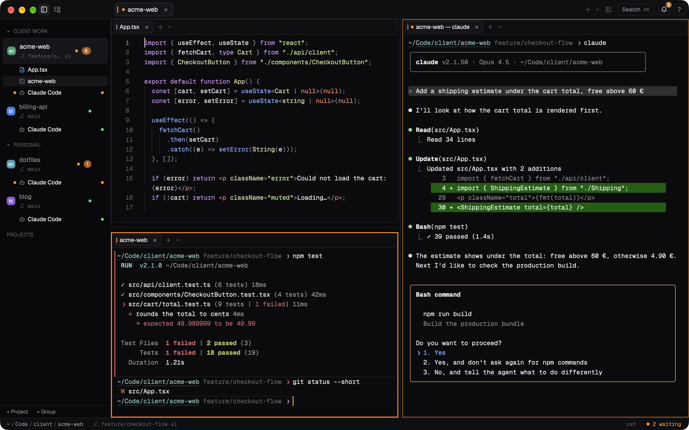
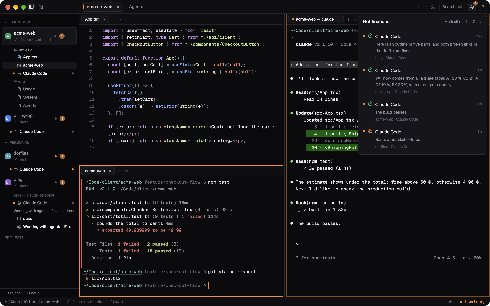
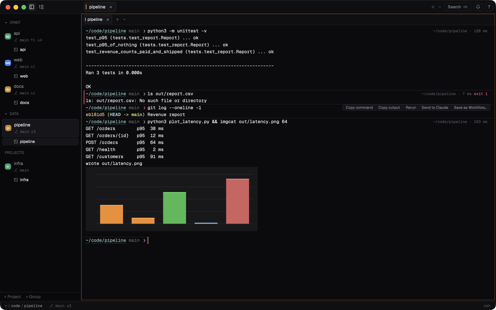
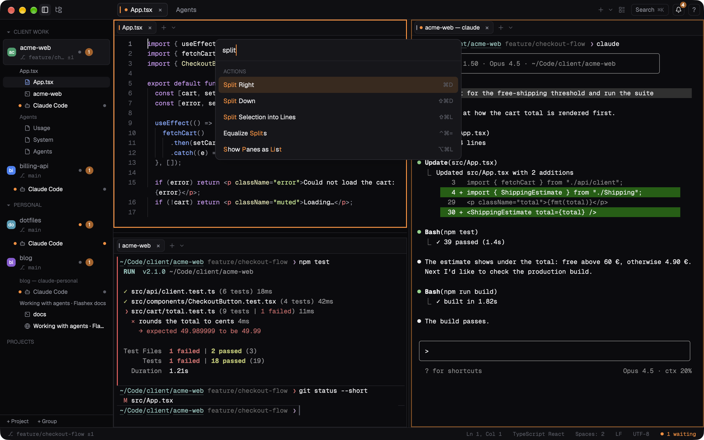
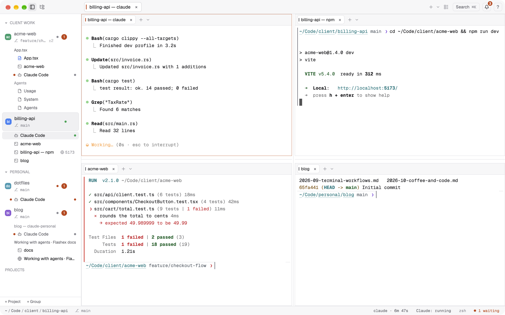

Flashex
A fast terminal built for AI coding agents, on macOS, Windows and Linux: its own terminal core, an editor with language servers, Source Control and agent-aware panes, in one native app.

What Flashex is
- A terminal built for agents. Run Claude Code (or any agent) in as many terminals as you like. Claude Code's hooks tell Flashex when an agent is running, waiting for you or done; the sidebar shows each agent's state as a dot, and notifications point at the exact terminal.
- Terminals that outlive the app. A small helper keeps your shells, agents and jobs running while Flashex restarts for an update, after a crash, and by default after you quit. They come back with what they showed.
- Command blocks. Every command is a block with its folder, duration and exit code: jump between them, fold, copy, rerun, send to an agent or save as a workflow.
- A real editor. Tree-sitter highlighting, multiple cursors, and go to definition, references, hover, completion, rename and diagnostics from the language servers you already have.
- Source Control, a browser panel and dashboards. Stage, commit, pull and push; open local pages next to your code; see your agents, your Claude Code usage and your Mac at a glance.
- Its own terminal core.
flashex-vtis written in Rust for Flashex, with inline images (kitty graphics, sixel, iTerm2) and the kitty keyboard protocol.
Flashex is free to use, for personal and commercial work. It runs on Apple Silicon Macs with macOS 13 or later; a Linux build is in beta.
Start here
The dmg or Homebrew, the first open, updates.
A project, terminals, splits and Claude Code in a few minutes.
Hooks, accounts, notifications, resuming sessions.
Splits, pane tabs, dragging, sizes and templates.
Every setting in config.toml.
The flashex command for scripts and agents.
A short tour




Getting help
Check Troubleshooting & FAQ first. Bugs and ideas are welcome in Issues; a clear report with steps to reproduce it is worth a lot. The best way to support Flashex costs nothing: star the repository and tell a friend who lives in the terminal.